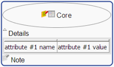
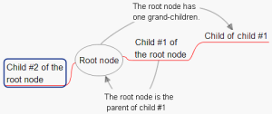
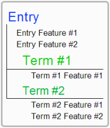

Introduction: How to fit a glossary in a mind map
This section explains how Pangloss lets you create a glossary in a mind mapping editor such as Freeplane. We'll first review the internal organsization of items in Freeplane and in a glossary, then we'll see how to makes the mapping between the two structures.
The Freeplane model is a straightforward model of what you see on maps. The description below is a simplified view of the actual model (for example, it does not mention free nodes). A more comprehensive description can be found on the Freeplane homepage.
 A node with an attribute, a note, two icons and some details. |
Except from the first node of the map (the so-called root node), all nodes have one parent, which is usually the node from which they have been created.Note that the parent-child relationship can be edited after node creaton.Two nodes having the same parent are called siblings. The children, grand-children, etc. of a node are the descendants of this node. The parent, grand-parent, etc. of a node are the ancestors of this node. The root node is the ancestor of all nodes. A branch is composed of a node and all its descendants. |  Parent-child relationshipzoom |
A glossary (or terminological database) can be modelled with a two-level model:
Entry: The glossary usually contains several Entries. An entry typically contains some conceptual information (e.g. definition) and one or several Terms.
Term: A Term expresses the concept in a given language.
Let's call Feature any piece of information attached either to an Entry or a Term. The diagram to the right shows a glossary Entry containing two Features, and two Terms. One Term contains one feature and the other Term contains two features. Some Features apply only to Entries. Others apply only to Terms. And some Features may apply both to Entries and Terms. |  A glossary entry |
- Node core
The node core is the most important and central part of a node. It cannot be hidden. If the node style is
Concept, then the following rule applies: if the node core contains an equal character, then Pangloss handles it as a Bilingual Entry, else it handles it as a Conceptual Entry. - Node note
The node note is usually presented as hover text. If you prefer to see them under the node details, click in the menu
View > Notes > Display notes in map. If you have a large monitor and often need to edit notes, we suggest you setView > Notes > Display note panel. - Node details
The node details are usually displayed just under the node core. If they are shrunked, a small triangle under the first character of the node core is displayed instead. To shrink or expand the details, just click this triangle.
- Node attributes
A node can contain some structured information called attributes. Each attribute is composed of a name and a value, and displayed in a 2 column table.
- Node icon
Icons can be understood as graphical indicators of the node's status. Freeplane set/unsets automatically a few icons (presence of a note, presence of attributes, etc.). Most icons shall be set/unset by the user. Freeplane uses a few icons for Entries (
Home).